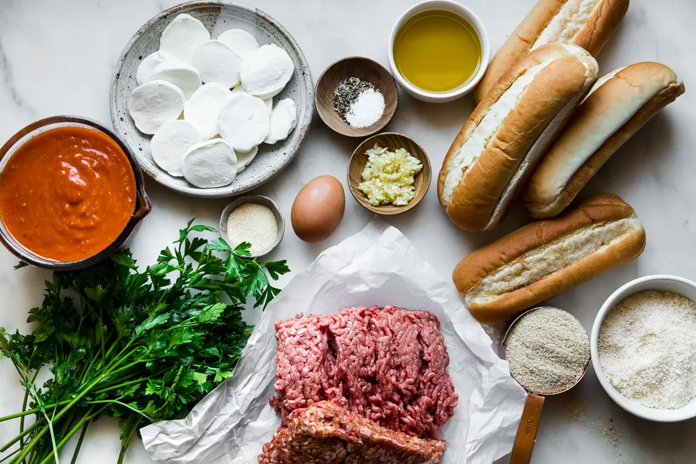
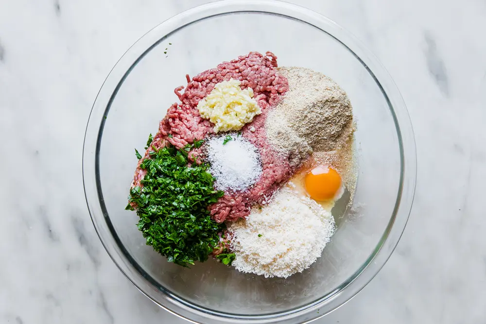
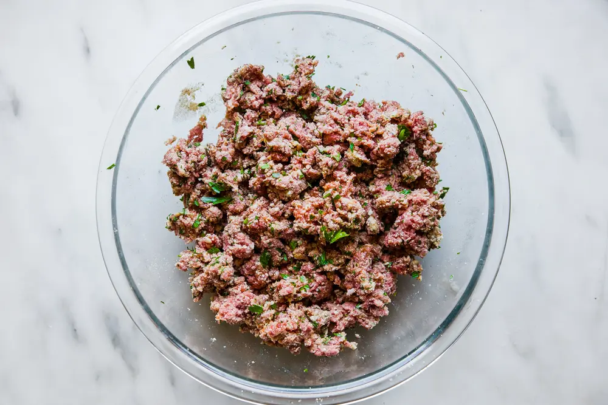
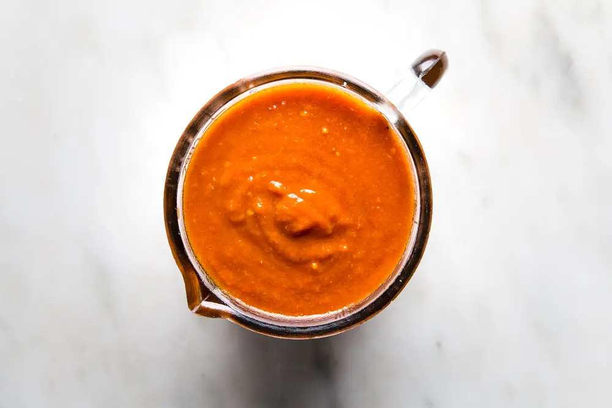
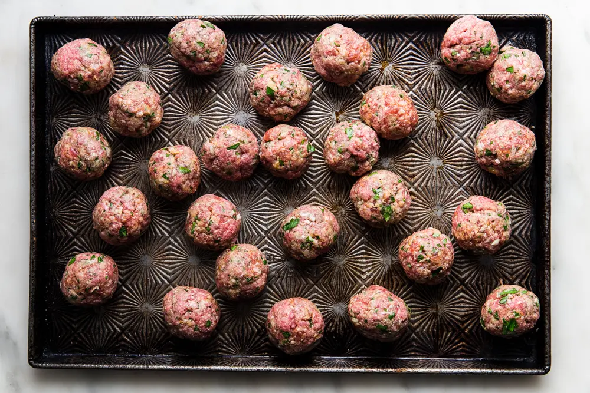
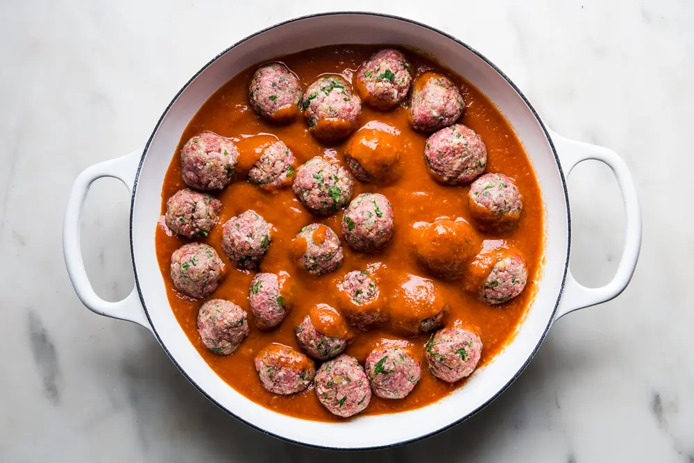
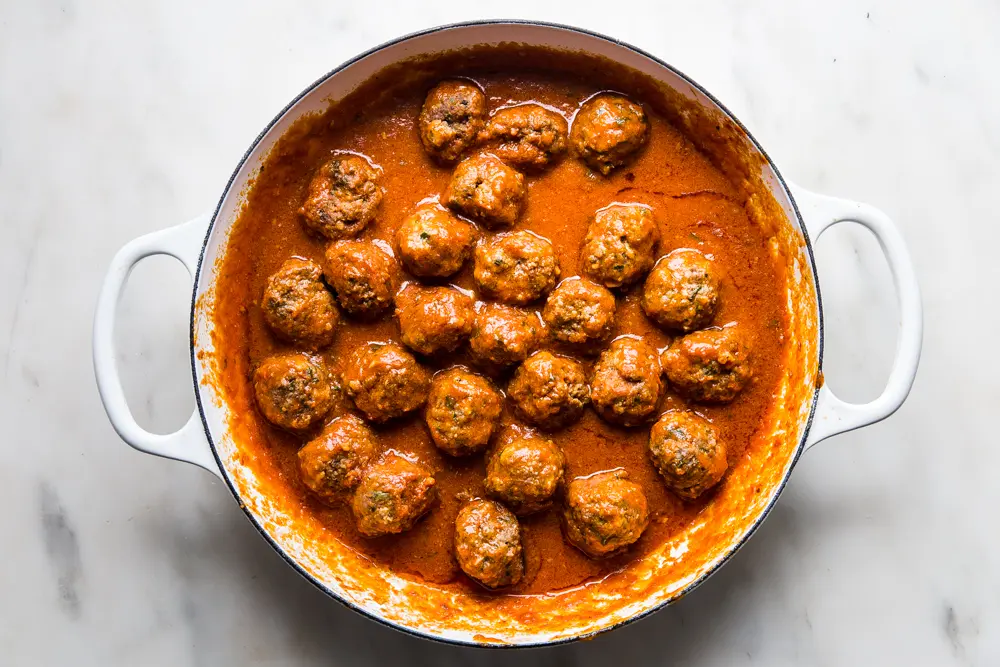

Step 1 (material needed, large bowl): Place the beed, sausage, parsley, garlic, breadcrumbs egg, parmesan cheese, salt, and pepper into the large bowl and combine the ingredients with your hands.

Step 2: Once the mixture is all fully combined, roll it into 24 meatballs

Step 3 (material needed, large saucepan): Add the meatballs and marinara to the large pan and put it on a low simmer. Cover, let it cook for 10 minutes.

Step 4: After these 10 minutes, uncover the meatballs and let them cook another 10 minutes.

Step 5 (material needed, oil brush): Whilst the meatballs are cooking, brush olive oil on the inside of the hoagie rolls then sprinkle with garlic powder.

Step 6 (material needed, 9x13 baking dish): Preheat broiler. Place the hoagies into the baking dish, adding 4 meatballs to each. Top with mozzarella, then set the dish under the broiler until the cheese is melted.

Step 7: Top the subs with parsley, then you are done!
